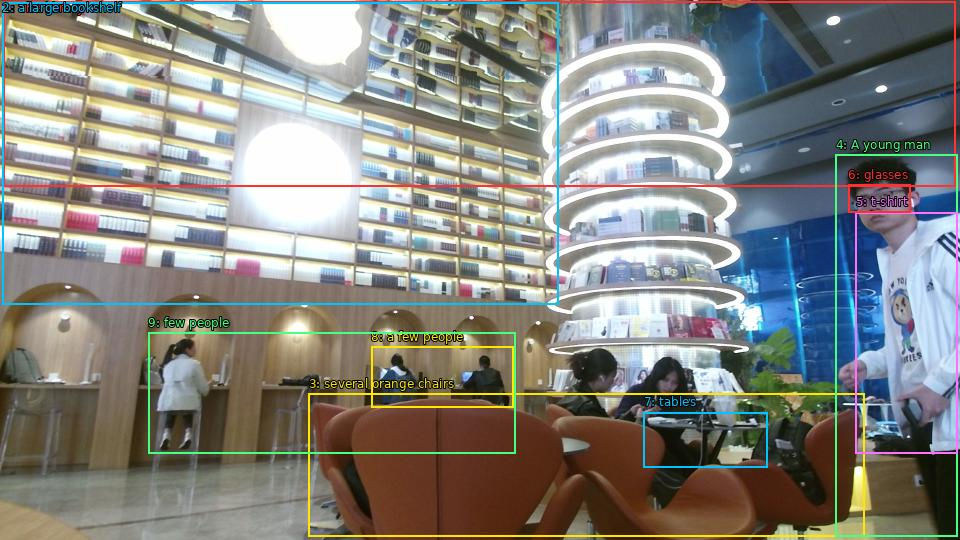

The image shows the interior of a modern library or bookstore. The library has a high ceiling with large circular lights hanging from it. On the left side of the image, there is a large bookshelf filled with books of different sizes and colors. In the center of the room, there are several orange chairs arranged in a spiral-like pattern. A young man is standing in front of one of the chairs, looking at the books. He is wearing a white t-shirt and glasses and appears to be explaining something to a group of people sitting at the tables. There are also a few people standing in the background. The overall atmosphere of the library is bright and inviting.

Original · Caption raw · Grounding raw · Koordinate
Številke so lokalni ID regije. Dolge slikovne oznake so skrajšane; spodaj so celotne fraze. Napovedane regije se lahko prekrivajo ali opisujejo skupine.
| ID | Celotna fraza | bbox xyxy |
|---|---|---|
| 1 | The library | [3.359999895095825, 1.8900001049041748, 955.6799926757812, 186.03001403808594] |
| 2 | a large bookshelf | [2.3999998569488525, 2.9700000286102295, 558.239990234375, 304.83001708984375] |
| 3 | several orange chairs | [308.6399841308594, 393.9300231933594, 864.47998046875, 536.4900512695312] |
| 4 | A young man | [835.6799926757812, 154.7100067138672, 957.5999755859375, 536.4900512695312] |
| 5 | t-shirt | [855.8399658203125, 212.49000549316406, 957.5999755859375, 453.33001708984375] |
| 6 | glasses | [848.1599731445312, 184.95001220703125, 910.5599975585938, 212.49000549316406] |
| 7 | tables | [643.6799926757812, 412.2900085449219, 767.5199584960938, 467.9100036621094] |
| 8 | a few people | [371.03997802734375, 346.95001220703125, 513.1199951171875, 407.4300231933594] |
| 9 | few people | [148.3199920654297, 332.9100036621094, 515.0399780273438, 453.33001708984375] |